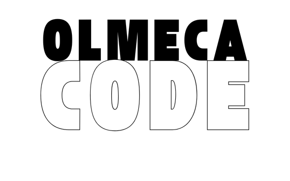

encambiodiario.mx hoy opera sobre WordPress y plugins de terceros. Proponemos construir una plataforma 100% propia: más rápida, con publicación desde celular, transmisiones en vivo y distribución automática a redes sociales — sin depender de nadie.
Auditoría técnica externa de encambiodiario.mx realizada el 10/oct/2026. La base no es mala — el problema es el techo que impone.
Misma redacción, mismos reporteros, mismas noticias. Lo que cambia es la velocidad, el control y el alcance.
La noticia pasa del celular al sitio en menos de 2 minutos.
Servidor de streaming propio (MediaMTX). Sin pagar plataformas.
Publicar una vez; aparecer en todas partes.
Diseñado para Google News y Discover, no adaptado después.
Editor moderno, sin wp-admin, sin plugins que romperse.
Infraestructura estimada: 2 VPS + Cloudflare ≈ $40–80 USD/mes. Cero licencias de CMS, tema o plugins.
Migración sin apagar el sitio actual: el WordPress sigue vivo hasta que la nueva plataforma esté verificada con los 30,841 artículos.
Repositorio, CI/CD, base de datos, API base, autenticación, staging.
Editor TipTap, workflow editorial, sitio público con diseño nuevo, sitemaps y schema.
ETL sobre la API de WP: 30,841 notas, 13,913 medios, consolidación de tags, verificación con crawler comparativo.
Redirects residuales, cambio de DNS, monitoreo SEO diario, plan de rollback. MVP transitable.
Captura móvil, modo offline, flujo de revisión desde el celular.
MediaMTX, simulcast a redes, sección En Vivo con sello de Google, clips verticales.
Auto-posteo a 4 redes, Web Push propio, newsletter, canal WhatsApp.
Inventario de pauta propio, preroll en lives, contenido patrocinado.
Proponemos un primer sprint de 3 semanas para validar la pieza más riesgosa — la migración — antes de comprometer el proyecto completo.